Muhammad Zubair Hasan I am a MSc student in the Computer Science and Engineering Department at the University of North Texas. Currently I am working with Dr. Mark Albert in the Biomedical AI Lab, affiliated with the Center for Computational Life Sciences at UNT. This work is conducted in collaboration with Northwestern University and funded by the NIH. Before starting my MSc, I spent 3.5+ years in industry developing scalable AI-driven solutions across domains such as automated e-KYC pipeline with components for face recognition, video-based liveness detection, identity document parsing and a recommendation system for KONAI to predict user engagement with promotional offers in a food delivery platform. I earned my BSc in Computer Science and Engineering from the Military Institute of Science and Technology (MIST). As part of my undergraduate research, I worked on a mobile-app-based Bangla book reader system for the visually impaired. After graduation, in parallel to my industry role I also joined the Digital Signal Processing (DSP) Lab at the Bangladesh University of Engineering and Technology (BUET), supervised by Dr. Md Kamrul Hasan, where I worked on diabetic foot ulcer classification and segmentation as part of the DFU Grand Challenge 2021 and 2022. |
|
Research InterestsI'm interested in computer vision, natural language processing, deep learning, generative AI, AI in healthcare, human-computer interaction, and especially multi-modal learning that integrates vision and language. |
Publications and Research Projects
|
|
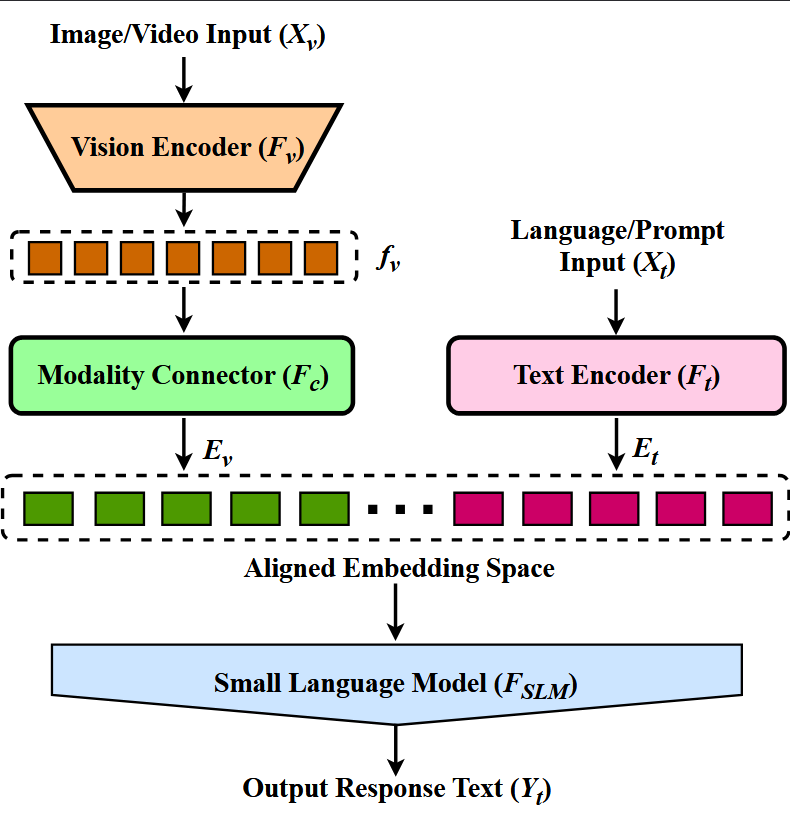
|
Scaling Down, Powering Up: A Survey on the Advancements of Small Vision-Language Models
Sheikh Iftekhar Ahmed, Muhammad Zubair Hasan, Abrar Jahin Niloy, Syed Mostofa Monsur, Mark V. Albert Under Review at Elsevier Information Fusion Journal, 2025 Comprehensive survey on Small Vision-Language Models (SVLMs), covering architectural developments, training pipelines, and optimization strategies. Analyzes model efficiency and performance trade-offs, focusing on CNN and ViT-based vision encoders, multi-stage training taxonomies, and optimization techniques like quantization and MoE. |
|
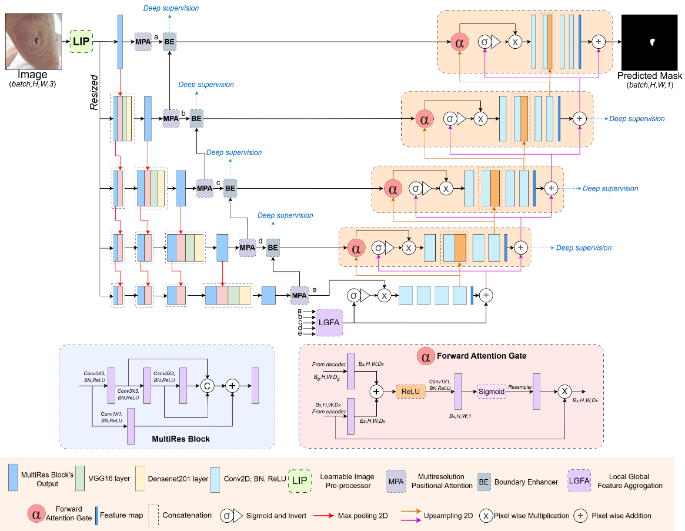
|
DFUSegNet: Boundary-aware hierarchical attentive fusion network with adaptive preprocessing for diabetic foot ulcer segmentation
Tushar Talukder Showrav, Muhammad Zubair Hasan, Md Kamrul Hasan Elsevier Knowledge-Based Systems Journal, 2025 paper / code Novel deep learning framework for diabetic foot ulcer segmentation featuring learnable image preprocessor, hierarchical encoder, and boundary enhancer. Achieves state-of-the-art performance on DFUC (60.06/70.78%), FUSeg (79.06/85.76%), and AZH Wound (81.21/87.28%) datasets through innovative multiresolution positional attention and local-global feature aggregation. |
|
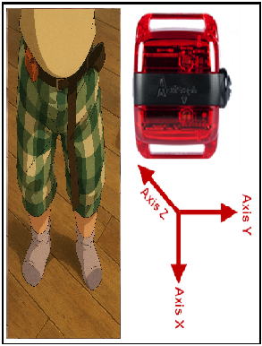
|
Toddler Physical Activity Recognition Using Machine Learning
Muhammad Zubair Hasan, Kyle Honegger, Sarah B. Welch, Mark V. Albert, Soyang Kwon Under Review at IEEE International Conference on Biomedical and Health Informatics (BHI), 2025 Machine learning approach for recognizing toddler physical activities using accelerometer data. Achieved 83.1% accuracy with gradient boosting in classifying five distinct activity types from 55 toddlers during free play sessions. Analysis of window sizes revealed trade-offs between accuracy and temporal resolution. |
|
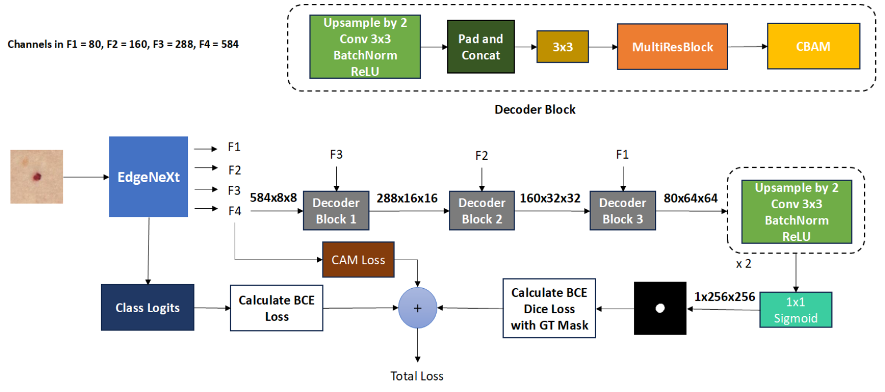
|
Hybrid Ensemble of Segmentation-Assisted Classification and GBDT for Skin Cancer Detection with Engineered Metadata and Synthetic Lesions from ISIC 2024 Non-Dermoscopic Images
Muhammad Zubair Hasan, Fahmida Yasmin Rifat arXiv preprint arXiv:2506.03420 arxiv / code / data Hybrid deep learning and GBDT ensemble for skin cancer detection using 3D-TBP images and synthetic lesion augmentation. |
|
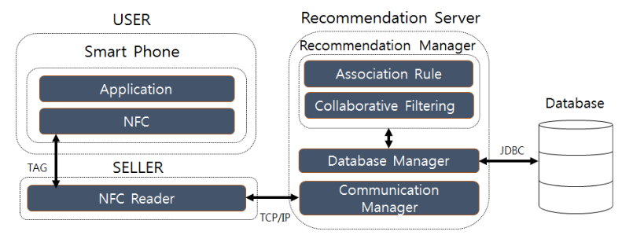
|
Exploring Challenges and Innovations in E-Commerce Recommendation Systems: A Comprehensive Review
Mashfiqur Rahman, Samiul Mushfik, Makhdum Ahsan Rupak, Muhammad Zubair Hasan, Minhaz Bin Farukee, Shawrup Kumer Suter Fourth Congress on Intelligent Systems (CIS 2023) pdf / springer Comprehensive review of e-commerce recommendation systems addressing challenges like cold-start problems, sparse datasets, and innovative approaches including deep learning integration. |

|
An Optimized YOLOv5 Based Approach For Real-time Vehicle Detection At Road Intersections Using Fisheye Cameras
Md. Jahin Alam, Muhammad Zubair Hasan, Md Maisoon Rahman, Md Awsafur Rahman, Najibul Haque Sarker, Shariar Azad, Tasnim Nishat Islam, Bishmoy Paul, Tanvir Anjum, Barproda Halder, Shaikh Anowarul Fattah arXiv preprint arXiv:2502.04566 arxiv / presentation / slides / code / data Optimized YOLOv5-based approach for real-time vehicle detection at road intersections using fisheye cameras, achieving 13.7% improvement in mAP @ 0.5 over baseline YOLOv5. |
|
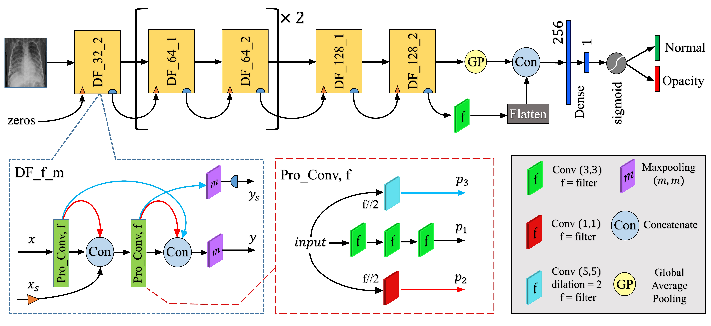
|
A Robust CNN Framework with Dual Feedback Feature Accumulation for Detecting Pneumonia Opacity from Chest X-ray Images
Md. Jahin Alam, Shams Nafisa Ali, Muhammad Zubair Hasan 11th International Conference on Electrical and Computer Engineering (ICECE 2020) arxiv / ieee / data Robust deep learning framework with Process Convolution blocks and Dual Feedback feature accumulation for automated pneumonia detection from chest X-ray images, achieving 97.78% accuracy. |
Industry Projects |
|
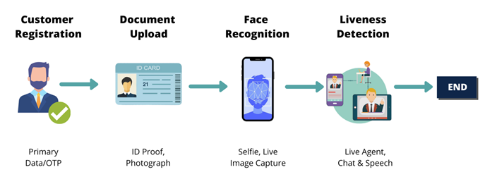
|
Automated E-KYC Pipeline with NID Verification, Face Recognition and Liveness Detection
Muhammad Zubair Hasan Data Scientist, Celloscope Ltd, Dec 2022 - July 2024 slides Developed an automated e-KYC pipeline including Face-Match, Video Liveness Detection, and National ID (NID) info extraction services. The system reduced manual verification time by 80% and currently serves 500,000+ users with NIST-compliant facial recognition. |
|
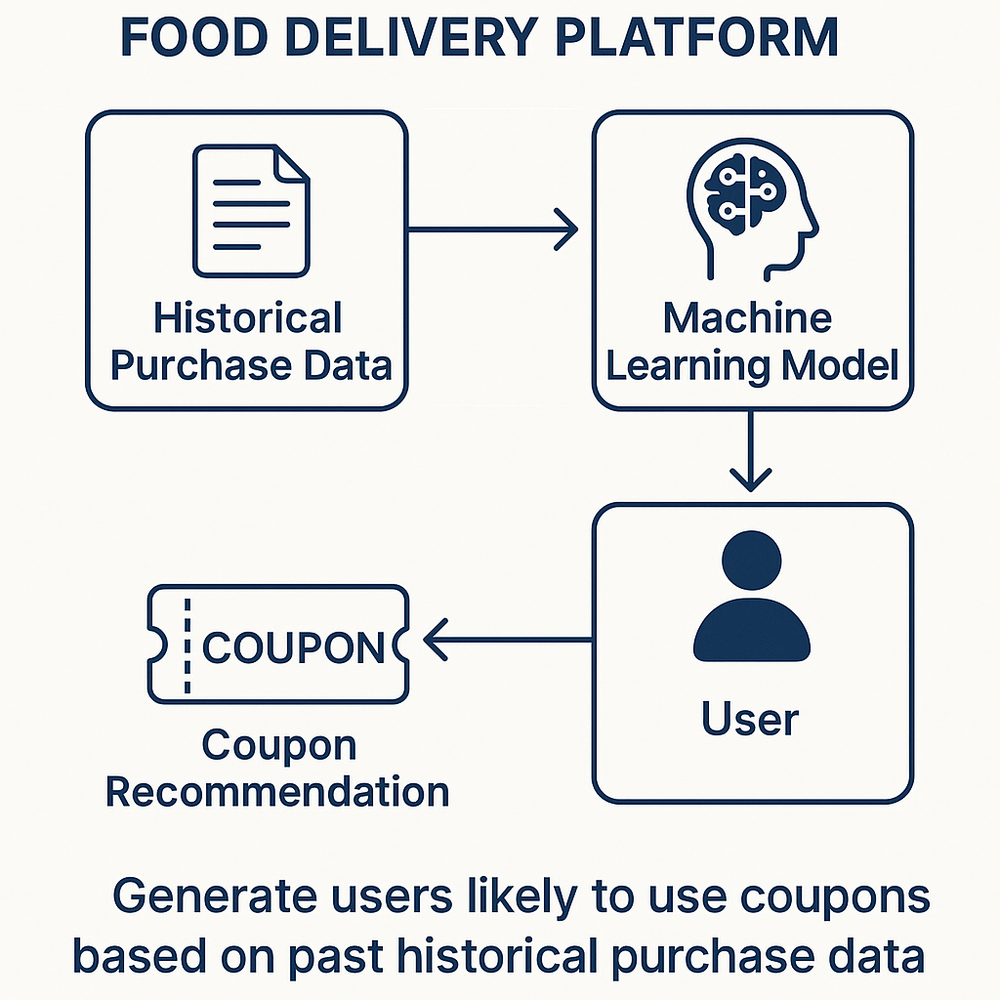
|
AI-Powered Recommendation System for Food Delivery Platform
Muhammad Zubair Hasan, Kh. Ehsanur Rahman, Mashfiqur Rahman Jr Data Scientist, Kona Software Labs Ltd, Apr 2021 - Nov 2022 Developed two recommendation systems: (1) Food menu recommendation system using content-based, SVD-based, and hybrid models to suggest relevant menu items to customers, and (2) Coupon recommendation system integrating RFM analysis and demographic features to identify users likely to use coupons, achieving 18% increase in coupon redemption rates. Implemented KNN-driven customer segmentation analyzing 10M+ user data on Cloudera, improving overall coupon ROI by 15%. Built Flask APIs with automated CI/CD pipeline reducing deployment time by 50%. |
Graduate, Undergraduate and Personal Projects |
|
|
FinBot: AI-Powered Chatbot for Personal Finance Management
Muhammad Zubair Hasan, Fahmida Yasmin Rifat Graduate Software Engineering Course Project, Aug 2024 - Dec 2024 code / slides / demo AI-driven mobile app (Flutter) automating transaction tracking, budget monitoring, plot generation from user prompts, and receipt-based expense categorization with >90% accuracy. Features FastAPI backend and PostgreSQL database. |
|
|
App-based Bangla Book Reader System for The Blind (Capstone Project)
Muhammad Zubair Hasan, Shariar Azad, Shahir Abdullah, Nazifa Hamid, Takik Hasan Undergraduate Capstone Project, Nov 2019 - Jan 2021 code / demo / slides / paper / reports Android app that takes pictures of book pages, converts image to text using EfficientNetB3 model, and converts to speech |
|
|
IoT Based Automated Entry System for Covid-19 Symptom Detection
Muhammad Zubair Hasan, Rubaiyat Alam Ruhin Personal Project, Nov 2021 - Dec 2021 code / demo Raspberry Pi-based entry system with three levels of risk detection. Integrated RFID sensor, camera for mask detection (ResNet-50, 99% accuracy), MLX90614 temperature sensor, and MAX30100 SPO2 sensor. Automated workflow with Firebase DB. |

|
2D Pose Detection from a Video
Muhammad Zubair Hasan Personal Project, December 2021 code Detected 2D human pose from multiple videos using mmpose and mmdet APIs. Applied Python multi-threading to process 4 videos concurrently and combined frames to generate final output video. |
|
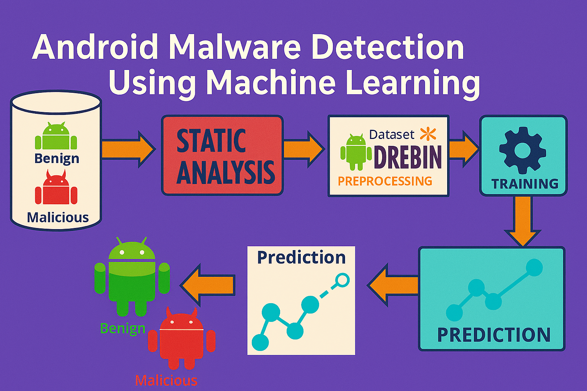
|
Android Malware Detection Using Machine Learning
Muhammad Zubair Hasan, Fahmida Yasmin Rifat, Neamat Al Sarah Undergraduate Pattern Recognition Course Project, November 2021 code / slides / data Used Drebin and MalwareGenome datasets, conducted EDA, feature selection with RFE, and tested multiple tree-based ensemble algorithms. LightGBM achieved 98% accuracy. Created script to extract permissions from APKs for model testing. |
|
|
Mobile Rental Plan Detection (ADL Pre-Hackathon)
Muhammad Zubair Hasan Hackathon Project, September 2021 code / data Multi-class classification problem using LightGBM and XGBoost. Conducted EDA, feature engineering, handled imbalanced classes, and used model stacking for improved performance. |
|
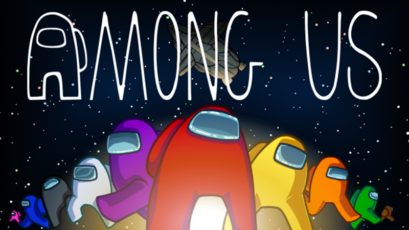
|
"Among Us" 3D Animation Using Blender
Muhammad Zubair Hasan, Nazifa Hamid Undergraduate Graphics Course Project, Aug 2020 - Nov 2020 demo / slides 3D animation project using Blender software, creating animated content inspired by the popular "Among Us" game with custom character designs and scenes. |
|
|
Designing a Social Website for Mentally Challenged People
Shariar Azad, Muhammad Zubair Hasan, Shahir Abdullah, Nazifa Hamid, Takik Hasan Undergraduate System Design Course Project, Feb 2020 - July 2020 slides / report System Analysis, Design & Development course project featuring emergency help, restricted internet access, video calls, messaging, file sharing, and discussion sessions with mental health experts. |
|
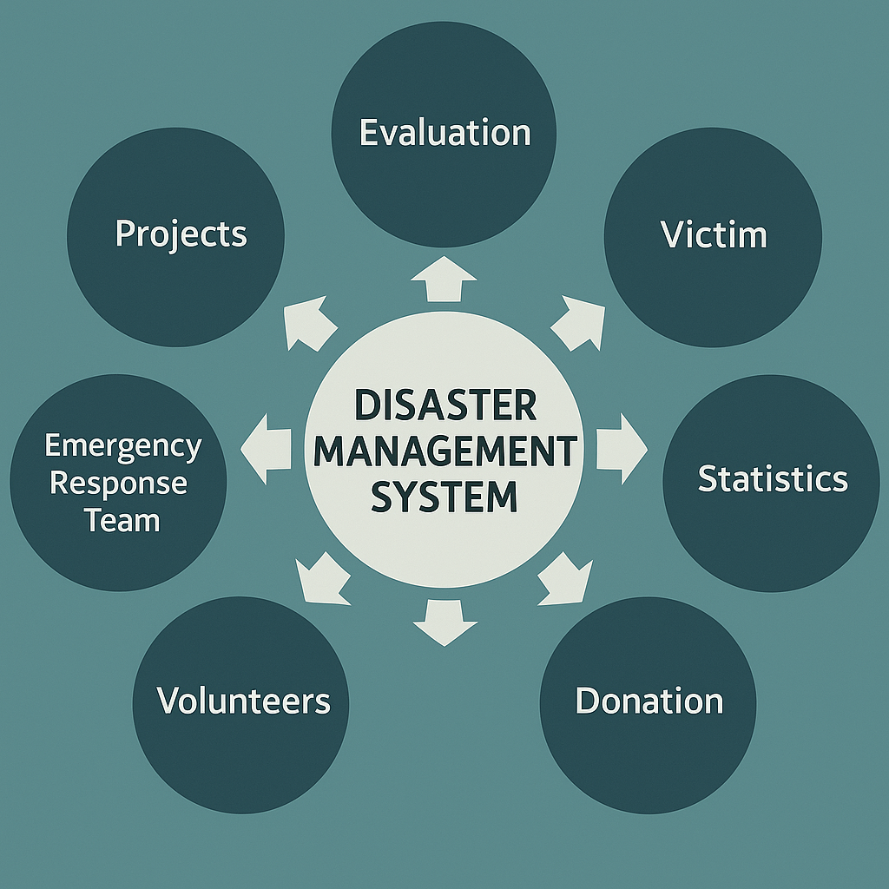
|
A Conceptual Design of National Disaster Management System
Shadman Aadeeb, Mahadi Hassan Munna, Muhammad Zubair Hasan, Mahmud Sarwar, Takik Hasan Undergraduate Database Course Project, Jan 2019 - Jun 2019 code / report Conceptual design project for national disaster management system, focusing on system architecture and emergency response coordination frameworks. |

|
Image Compression and Watermarking Tool Using Java
Muhammad Zubair Hasan, Shahir Abdullah Undergraduate Java Course Project, July 2018 - Nov 2018 code / slides / report Comprehensive Java tool implementing lossless compression (RLE, DPCM, predictive encoding, entropy encoding, Huffman encoding), lossy compression (DCT, wavelet transform), and steganography watermarking for image encoding. |
Miscellaneous |
Teaching |
|
Achievements |
Online Courses |
|
|
Template stolen from Jon Barron's Site. |